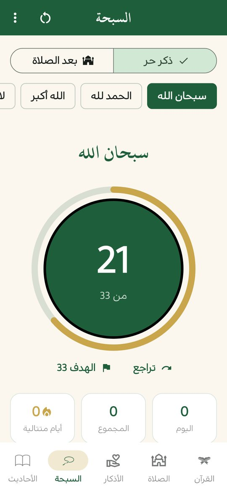

سبحة إلكترونية مجانية بدون إعلانات
سبحة هادئة وبسيطة في «منهج حياة»: تختار الذكر والعدد، وتعدّ بلمسة أو بأزرار الصوت دون النظر إلى الشاشة، وتتابع إحصاءاتك اليومية. تعمل دون إنترنت.
ملف APK لأندرويد 7.0 فأحدث · مجاني · دون إعلانات

سبحة على مقاسك
- اختر الذكر والعدد المطلوب (مثلاً 33).
- أضف أذكاراً خاصة بك لتعدّها.
- اهتزاز عند كل تسبيحة وعند بلوغ الهدف.
- زر تراجع إن أخطأت في العدّ.
وضع «بعد الصلاة»
وضع خاص يرتّب لك التسبيح بعد الصلاة: 33 و33 و33 ثم التهليل، وينتقل بك من ذكر إلى الذي يليه.
العدّ بأزرار الصوت
خيار اختياري من قائمة السبحة يتيح لك العدّ بأزرار رفع الصوت وخفضه دون النظر إلى الشاشة. يعدّ داخل تبويب السبحة فقط، ويعيد الأزرار لعملها المعتاد في بقية الشاشات والتطبيقات.
إحصاءات يومية
تعرض السبحة عدّك اليوم والمجموع وعدد الأيام المتتالية التي داومت فيها، لتتابع التزامك.
متى تفيدك السبحة الإلكترونية؟
- في الأماكن الهادئة أو أثناء التنقّل، حيث لا تريد أن تشغل من حولك.
- حين يكون العدد كبيراً وتخشى أن تخطئ في العدّ، فالتطبيق يعدّ عنك ويهتزّ عند بلوغ الهدف.
- إن أردت متابعة التزامك، فالإحصاءات اليومية والأيام المتتالية تعطيك صورة واضحة.
- إن كنت تفضّل ألّا ترفع عينيك عن شيء آخر، فالعدّ بأزرار الصوت يكفيك عن النظر للشاشة.
بسيطة وخفيفة وخاصة بك
السبحة جزء من تطبيق واحد فيه المصحف والأذكار والصلاة، فلا تحتاج تثبيت تطبيق منفصل. لا إعلانات تقاطع ذكرك ولا حساب تسجّل به، وبيانات عدّك تبقى على هاتفك وتدخل في النسخة الاحتياطية التي تنشئها أنت عند الحاجة.
أسئلة شائعة
هل السبحة مجانية وبدون إعلانات؟
نعم، مجانية بالكامل ودون إعلانات، وهي جزء من تطبيق «منهج حياة».
هل أستطيع العدّ دون النظر إلى الشاشة؟
نعم، فعّل «العدّ بأزرار الصوت» من قائمة السبحة.
هل يمكنني إضافة ذكر خاص؟
نعم، يمكنك إضافة أذكارك الخاصة واختيار العدد المطلوب لكل منها.
هل تدعم السبحة قارئ الشاشة؟
نعم، للأزرار الرئيسية وعدّاد السبحة أوصاف يقرؤها قارئ الشاشة (TalkBack).
اقرأ أيضاً
حمّل منهج حياة مجاناً
القرآن والصلاة والذكر في تطبيق واحد، دون إعلانات ودون حساب.